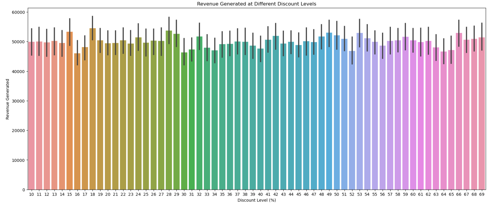
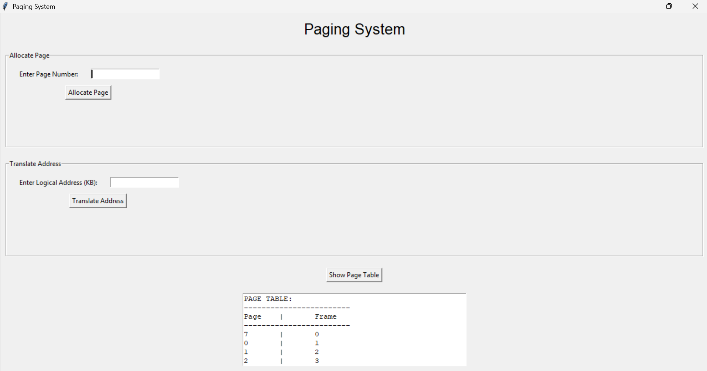

Blinkit Sales Performance Dashboard
Description:
Analyzed Blinkit's sales data and developed an interactive Power BI dashboard to understand key business performance indicators and sales trends.
Insight:
Identified trends in outlet performance, product ratings, and total sales to support data-driven business decisions.
Tools: Power BI | DAX | Data Modeling
GitHub
Loan Approval Prediction Using Machine Learning
Description:
Built a machine learning model to predict loan approval using applicant financial and demographic data.
Performed data preprocessing and implemented a Random Forest model to identify factors influencing approval decisions
Insight:
Credit history emerged as the most influential factor affecting loan approval decisions.
The model achieved about 85% accuracy, showing that machine learning can effectively support financial risk assessment.
Tools: Python | Scikit‑learn | Pandas | Jupyter Notebook
GitHub
E-commerce Flash Sales Analysis
Description:
Analyzed flash sales impact on product performance and customer engagement using Exploratory Data Analysis and Natural Language Processing.
Insight:
Identified customer sentiment patterns and product trends influencing flash sale performance.
Tools: Python | NLP | Jupyter Notebook
GitHub
Operating Systems Memory Management
Description:
Implemented the FIFO page replacement algorithm to simulate real-time memory allocation and page replacement processes.
Insight:
Visualized page faults and memory performance using Python simulations to analyze system behavior.
Tools: C++ | Python | VS Code
GitHub